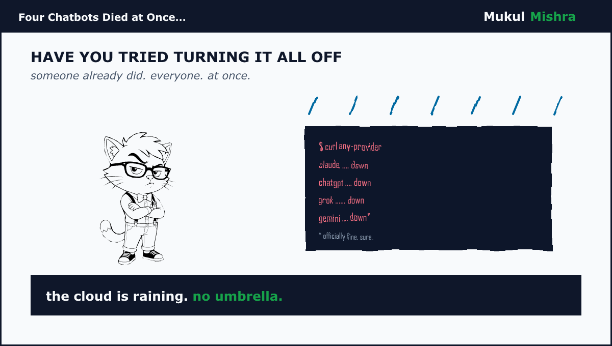
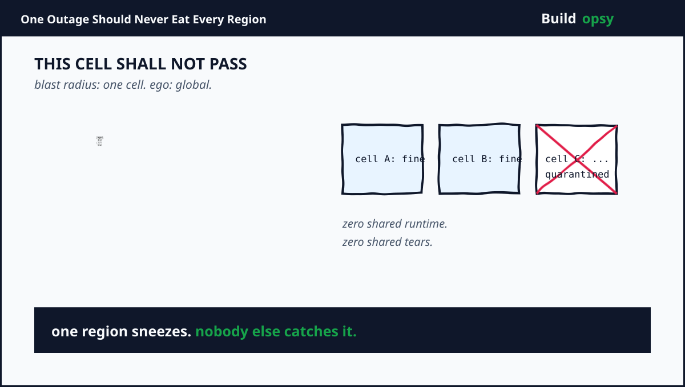

Free Engineering Calculators
Nine instruments for developers, SREs and CTOs. Token bills, error budgets, HPA sizing, sampling fits, pool sizing and downtime cost, all runnable in seconds. Everything runs in your browser with no data sent. Each links to its teardown.
Jump to Token Bill · RPS Envelope · Compaction · Retry Storm · Error Budget · HPA Sizer · Sampling Fit · Pool Sizer · Downtime Cost. Built from the Cursor token, Replit retry, Razorpay Kafka and AWS thermal teardowns.
Token Bill Calculator
Price one agent turn from context mix, then scale to a month. Starts from a heavy agent session: 80k input tokens at 87.5 percent cache hits plus 1.5k output tokens.

RPS Envelope Estimator
Turn events per second into a monthly envelope: edge rate times seconds per month at a blended price, plus fixed platform spend.

Compaction Survival Calculator
A context window goes in, a summary comes out. See what survives and what the re-read bill looks like. Defaults mirror the measured median: 575k crushed to about 4.3k, then roughly 28 steps of re-reading.
Retry-Storm Cost Calculator
Failed agent attempts rebill every retry. Multiply tasks by retries by attempt cost and watch the storm's share of the budget.
Error Budget Burn Calculator
Turn an SLO into minutes. A 99.9 percent objective leaves 43.2 minutes a month. Enter what is already burned plus the current burn multiple to see when the budget runs dry.

HPA Replica Estimator
The real Kubernetes autoscaler formula. Desired replicas equal current replicas times current utilization over target utilization, rounded up. Defaults scale 8 replicas at 72 percent toward a 60 percent target.

Observability Sampling Fitter
Spans per second times bytes per span is your daily ingest. Price it, then compute the keep rate that fits the budget. Defaults ingest 50k spans a second at 2 KB against a $20k monthly budget.

Connection Pool Sizer
Little's law for pools. Concurrent connections equal peak RPS times p99 latency in seconds, times a safety factor, spread across pods. Defaults mirror a 10k TPS payments switch at 45ms p99.

Downtime Cost Calculator
Minutes down times revenue per minute, plus the SLA credit on the cloud bill. Assumes a 43,800-minute month. Defaults model a four-hour outage against $4M monthly revenue at risk.